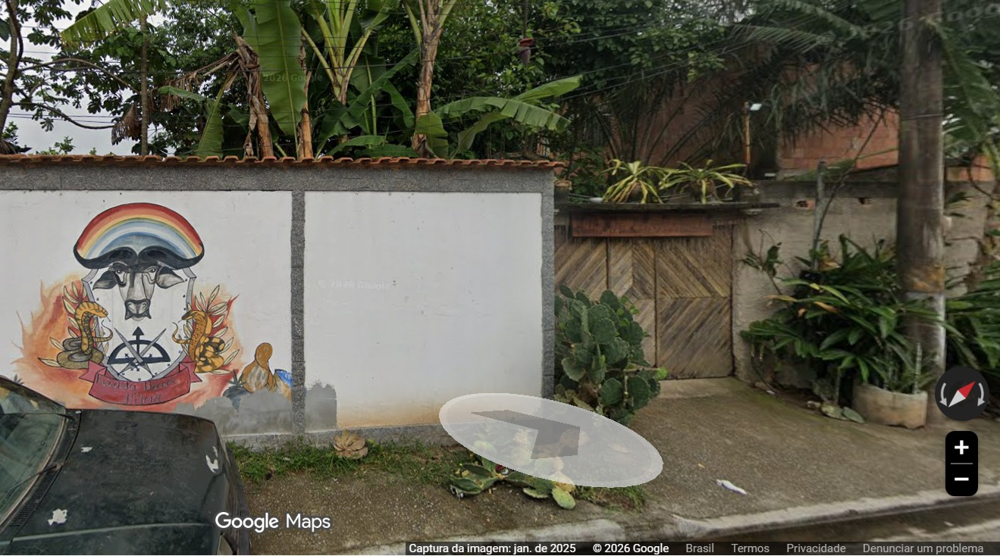
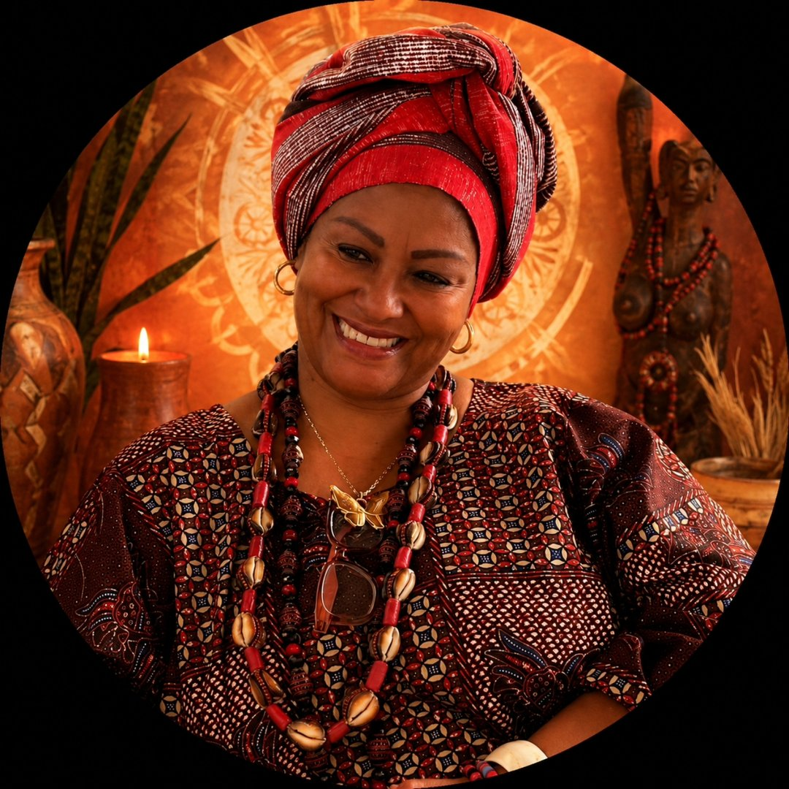

Fundação
A HUNWXÊ ZÔ NITAZOJI foi fundada com a missão de preservar os rituais sagrados e acolher a comunidade em um espaço de fé e ancestralidade.

Ancestralidade • Fé • Comunidade
Uma casa tradicional de Candomblé dedicada à preservação dos valores ancestrais, ao acolhimento da comunidade e à celebração viva de nossa herança cultural.

Há décadas, a HUNWXÊ ZÔ NITAZOJI acolhe pessoas de todos os caminhos com os braços abertos e o coração generoso. Cada parede guarda uma história, cada canto ecoa uma prece, cada encontro fortalece os laços que nos unem como povo.
Somos uma família construída sobre a firmeza dos fundamentos ancestrais, na alegria dos ritmos que ecoam geração após geração, e no compromisso sagrado de preservar o que nos torna quem somos.
Iyálorìṣa Cynthia Martinez Iyálorìṣa — Dirigente da Casa
A HUNWXÊ ZÔ NITAZOJI foi fundada com a missão de preservar os rituais sagrados e acolher a comunidade em um espaço de fé e ancestralidade.

A construção do novo barracão marcou um capítulo importante, ampliando o espaço para as cerimônias e fortalecendo a presença da casa na comunidade.

A casa ampliou suas atividades para incluir oficinas culturais, rodas de conversa e projetos sociais, tornando-se referência cultural no bairro.

A HUNWXÊ ZÔ NITAZOJI recebeu reconhecimento formal como centro de preservação cultural, firmando parcerias com instituições de ensino e cultura.

Hoje, a casa continua viva, acolhendo gerações e mantendo viva a chama da tradição, com programação cultural, social e espiritual constante.
Com mais de três décadas de dedicação, Mãe de Santo conduz a HUNWXÊ ZÔ NITAZOJI com sabedoria, amor e firmeza. Sob sua liderança, a casa tornou-se um espaço de referência para a preservação cultural e o acolhimento comunitário.
Sua trajetória é marcada pelo compromisso inabalável com a tradição, pela educação dos jovens e pelo fortalecimento dos laços entre as gerações.

Pai de Santo acompanha a casa desde sua fundação, sendo peça fundamental na manutenção dos rituais sagrados e na formação de novos lideranças.
Sua experiência e conhecimento dos ritmos ancestrais garantem a autenticidade e a solemnidade de cada cerimônia realizada em nossa casa.
Celebrações abertas à comunidade, onde compartilhamos a força e a beleza dos rituais tradicionais.
Oficinas de arte, culinária afro-brasileira e expressão cultural que mantêm vivas nossas tradições.
Cursos sobre história, cultura e tradições afro-brasileiras para todas as idades.
Espaços de diálogo e troca de experiências sobre temas relevantes para a comunidade.
Palestras educativas sobre ancestralidade, direitos culturais e preservação do patrimônio imaterial.
Ações solidárias que fortalecem os laços entre vizinhos e contribuem para o bem-estar coletivo.
Experiências imersivas que conectam os participantes à cosmologia e à espiritualidade ancestral.

O barracão é o coração pulsante do Hunwxê Zô Nitazoji. É ali que os ritmos dos atabaques ecoam, que os cantos sagrados se entoam e que a comunidade se reúne para celebrar a vida, a fé e a ancestralidade. Um espaço sagrado e acolhedor, aberto a todos que desejam vivenciar a tradição.

Os atabaques são a voz ancestral que guia cada cerimônia. Cada toque carrega séculos de tradição, cada ritmo comunica com os fundamentos. A musicalidade presente nas celebrações públicas representa a essência cultural viva do Candomblé e mantém viva a conexão entre os mundos.
Mais do que uma instituição, o Hunwxê é uma família. O acolhimento indiscriminado, o respeito mútuo e a convivência harmônica são pilares que sustentam nossa casa. Cada pessoa que cruza nossa porta torna-se parte de uma rede de amor, fé e irmandade que se fortalece a cada dia.
O Hunwxê vai além das celebrações religiosas. Promovemos oficinas de arte, culinária e cultura, rodas de conversa, palestras educativas e projetos sociais que fortalecem os laços comunitários e valorizam a herança cultural afro-brasileira em todas as suas manifestações.
O Hunwxê Zô Nitazoji é guardião de uma tradição que se perpetua há gerações. Nossos ritmos, nossas cantigas, nossos saberes ancestrais são transmitidos de mão em mão, de coração em coração, preservando a essência de uma cultura que é patrimônio de toda a nação.
A ancestralidade é o alicerce sobre o qual esta casa foi erguida. Honrar nossos antepassados não é apenas memória — é compromisso vivo com a continuidade dos fundamentos, das línguas, dos ritmos e dos valores que definem nossa identidade como povo.
Cada cerimônia é uma ponte entre o passado e o futuro. Cada canto é uma oração que ecoa através do tempo. Cada oferenda é um agradecimento àqueles que caminharam antes de nós e plantaram a semente que hoje floresce em nossa casa.

Celebração aberta à comunidade com música, dança e oferendas. Todos são bem-vindos.
Debate sobre o papel da ancestralidade na vida dos jovens contemporâneos.
Aprenda receitas tradicionais e conheça a história por trás de cada ingrediente e preparo.
Conferência sobre a importância da preservação das tradições religiosas afro-brasileiras.
O Candomblé constitui uma das mais importantes expressões da cultura afro-brasileira, preservando tradições, línguas, músicas, culinária, valores comunitários e conhecimentos ancestrais transmitidos entre gerações.


Segunda a Sexta: 9h às 17h
Sábado: 8h às 14h
Domingo: Cultos e Eventos